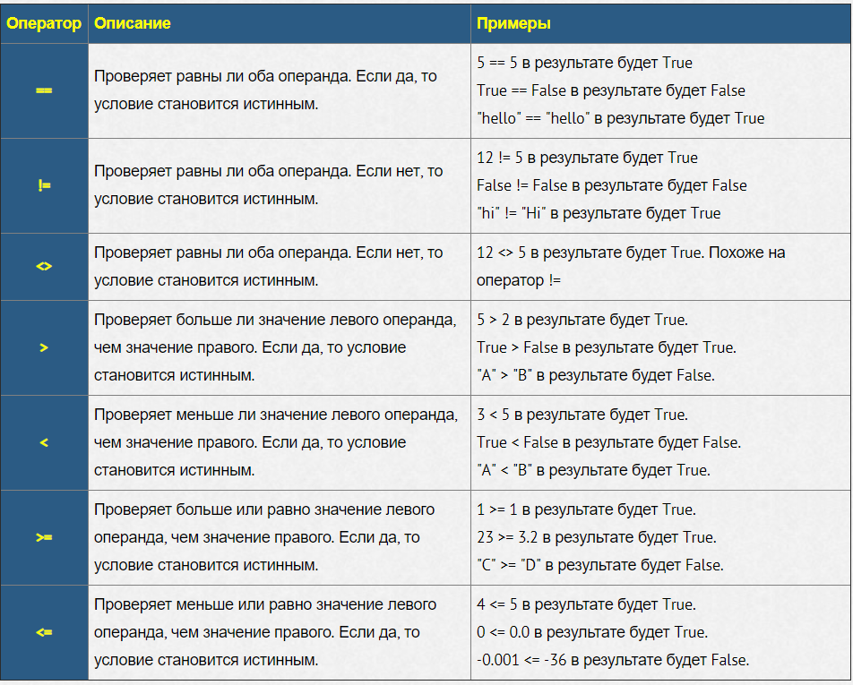

Операторы сравнения
Условный оператор ветвления if
Оператор ветвления if позволяет выполнить определенный набор инструкций в зависимости от некоторого условия.
Синтаксис оператора if выглядит так.
if выражение:
инструкция_1
инструкция_2
...
инструкция_n
После оператора if записывается выражение. Если это выражение истинно, то выполняются инструкции, определяемые данным оператором. Выражение является истинным, если его результатом является число не равное нулю, непустой объект, либо логическое True. После выражения нужно поставить двоеточие “:”.
ВАЖНО: блок кода, который необходимо выполнить, в случае истинности выражения, отделяется четырьмя пробелами слева!
Например:
a = 3 # объявляем переменную a со значением 3
if a == 3: # если a равно 3, то
print("hello 2") # то вывести ‘hello 2’
В данном примере результатом условия будет True, поэтому инструкция print будет выполнена.
Конструкция if – else
Бывают случаи, когда необходимо предусмотреть альтернативный вариант выполнения программы. Т.е. при истинном условии нужно выполнить один набор инструкций, при ложном – другой. Для этого используется конструкция if – else.
if выражение:
инструкция_1
инструкция_2
...
инструкция_nе
else:
инструкция_a
инструкция_b
...
инструкция_x
Например:
a = 3 # объявляем переменную a с значением 3
if a > 2: # если a больше 2
print("H") # то вывести ‘H’
else: # иначе, если условие a больше 2 неверное
print("L") # то вывести ‘L’
В данном примере будет выведено ‘H’, так как условие a > 2 верно.
a = 1 # объявляем переменную a с значением 1
if a > 2: # если a больше 2
print("H") # то вывести ‘H’
else: # иначе, если условие a больше 2 неверное
print("L") # то вывести ‘L’
В примере выше условие a > 2 неверно, поэтому будет выведено ‘L’.
Условие такого вида можно записать в строчку, в таком случае оно будет представлять собой тернарное выражение.
a = 17
b = True if a > 10 else False
print(b)
В результате выполнения такого кода будет напечатано: True
Конструкция if – elif – else
Для реализации выбора из нескольких альтернатив можно использовать конструкцию if – elif – else.
if выражение_1:
инструкции_(блок_1)
elif выражение_2:
инструкции_(блок_2)
elif выражение_3:
инструкции_(блок_3)
else:
инструкции_(блок_4)
Пример.
a = int(input("введите число:"))
if a < 0:
print("Neg")
elif a == 0:
print("Zero")
else:
print("Pos")
Если пользователь введет число меньше нуля, то будет напечатано “Neg“, равное нулю – “Zero“, большее нуля – “Pos“.
Задание:
1. Написать простейший калькулятор. Даны 3 переменные.
1. Числовая переменная number1
2. Числовая переменная number2
3. Строковая переменная operation, которая хранит в себе одно из этих значений: ‘+’, ‘-‘, ‘*’, ‘/’.
Если переменная operation равна ‘+’, то сложить number1 + number2,
Если переменная operation равна ‘-‘, то вычесть number1 – number2 и так далее.
2. Дана следующая функция y = f(x):
y = x - 0.5, при x > 0;
y = 0, при x = 0;
y = |x|, при x < 0.
Написать программу, определяющую значение y по переданному значению x.